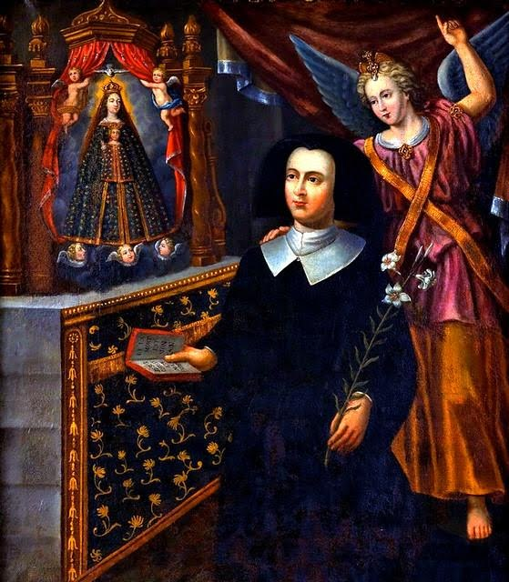

>

Vénérable Anne de Xainctonge
Fondatrice de la Compagnie de Sainte Ursule
1567– 1621
Prière
Vénérable Anne de Xainctonge,
Toi qui as fondé ta vie sur le Christ, intercède pour nous
Et donne-nous de croire davantage en Lui.
Tu as entendu et suivi la voix de l’Esprit,
Tu as quitté la maison de ton père, bravé les puissants et refusé les murs,
Tu n'as craint ni le petit nombre, ni la pauvreté, ni les épreuves.
Et vous étiez deux pour commencer la Compagnie
Qui a traversé les espaces, les océans et le temps.
Avec tes sœurs, l’Esprit t’a greffée sur le Christ humble et pauvre,
Il t’a mise à l’école et au service des petits,
et t’a fait sortir pour Dieu au cœur du monde.
Garde-nous à l’ombre de l’Esprit pour entendre la voix du Père
Et pour répondre librement à son dessein bienveillant,
Pour sa joie, sa louange et son service et pour le bien du Corps entier.
Amen.